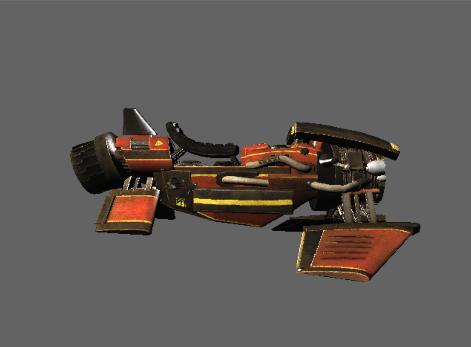

← Projects
C++
DX11
School
Overview
This project was developed for the Graphics Programming course at DAE. It features two
implementations of the same renderer: a fully hand-written software rasterizer running on
the CPU, and a hardware-accelerated version built with DirectX 11 on the GPU. A runtime
hotkey allows switching between the two, making it easy to compare the results directly.
The main goal of the project was to gain a deeper understanding of how rasterization works
under the hood before relying on a graphics API.
Technical Highlights
- Software rasterizer: Implemented a complete rasterization pipeline in C++,
including vertex transformations, triangle clipping, barycentric interpolation,
perspective-correct UV mapping, depth buffering, normal mapping, and a Phong shading
model with multiple visualization modes (observed area, diffuse, specular, and combined).
- DirectX 11 renderer: Recreated the same scene using DirectX 11 with
full device and swap chain setup, HLSL vertex and pixel shaders, texture sampling with
point, linear, and anisotropic filtering, and configurable culling modes.
- Runtime renderer switching: Both renderers operate on the same scene
data and camera system. Pressing
F1 toggles between the CPU and GPU renderers
at runtime, allowing immediate visual comparison.
- Debug visualizations: The software renderer includes optional overlays
such as depth buffer and bounding box views, which help illustrate how the rasterization
process works internally.
Screenshots
DirectX 11 hardware output

Software rasterizer output